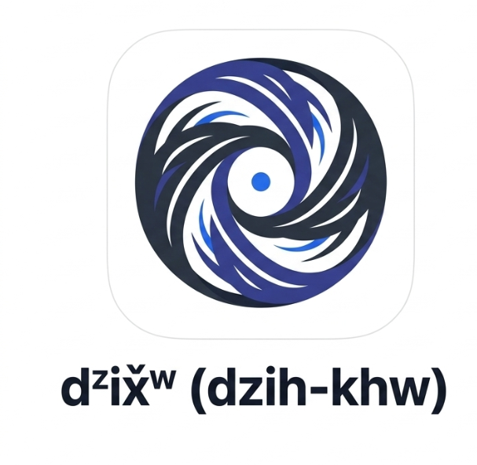

This application is built strictly as an offline-first, zero-data-collection tool. All data, inputs, and personal images remain encrypted entirely on your physical device. The Tribal Resilience Studio does not track, collect, store, or transmit your behavioral data or personal information to any external server.
Your data stays on your device. No cloud sync. No analytics. No third-party sharing. This is the core of our data sovereignty promise.
This tool is designed for somatic retraining and nervous system regulation. It is strictly a supportive digital therapeutic and is NOT a substitute for professional medical advice, diagnosis, or psychiatric treatment. The Tribal Resilience Studio and its developers are not licensed medical providers. Full terms of use.
If you are experiencing a medical emergency, are in immediate danger, or require active crisis intervention, this application cannot dispatch help. Please immediately dial 988 (Suicide & Crisis Lifeline) or 911.
The Theta Differential Engine and haptic stabilization protocols provided herein are experimental bioelectronic neuromodulation tools. They are provided for informational and supportive wellness purposes only. These tools do not constitute medical, psychiatric, or diagnostic care. By utilizing these features, the user acknowledges the experimental nature of binaural and haptic intervention and assumes all responsibility for their own physiological response.
By tapping ‘I Understand and Enter,’ you acknowledge that the Tribal Resilience Studio provides this software ‘as is.’ You agree to assume all risk associated with its use, and the Tribal Resilience Studio is fully indemnified and holds no liability for any outcomes related to the use or inability to use this software.
Requires headphones for independent left/right channel delivery.

Š̌aqʷ x̌ax̌aʔ Studio
Engaging…